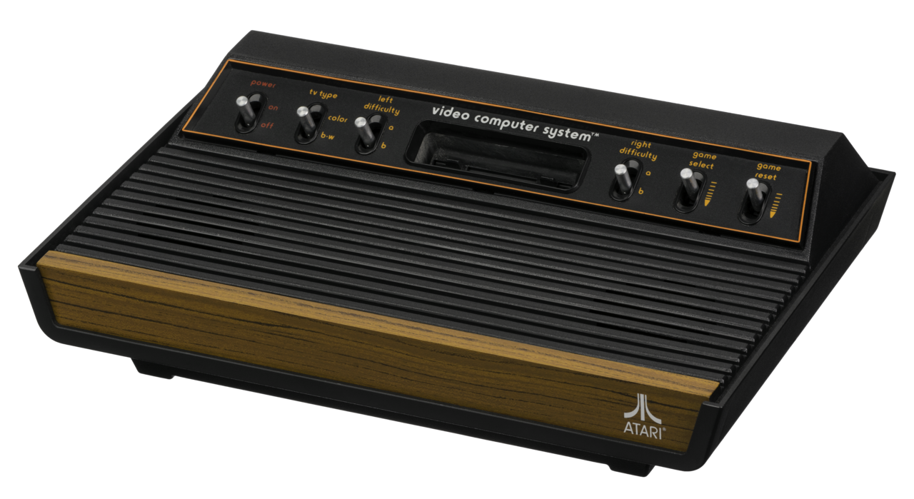
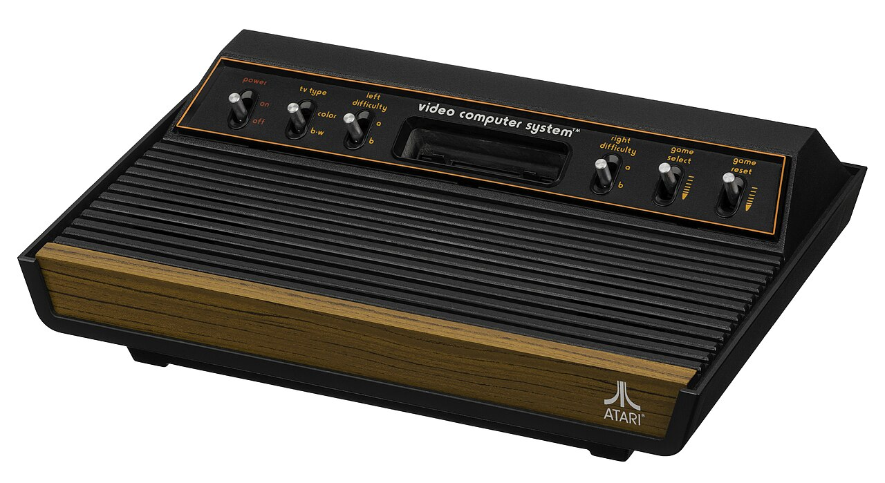
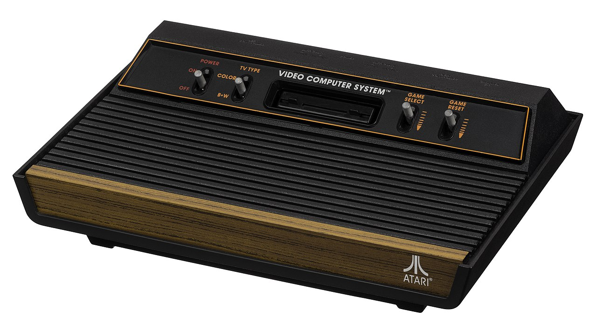
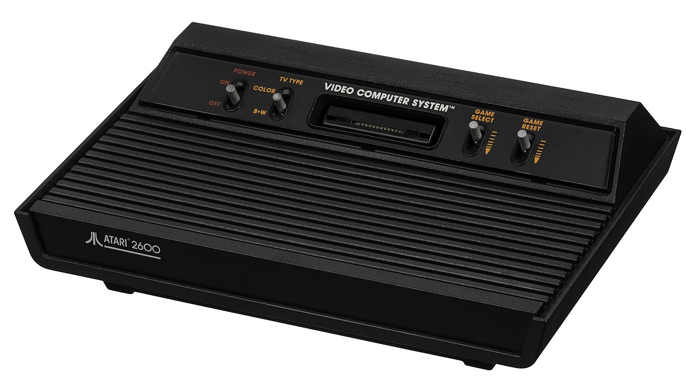
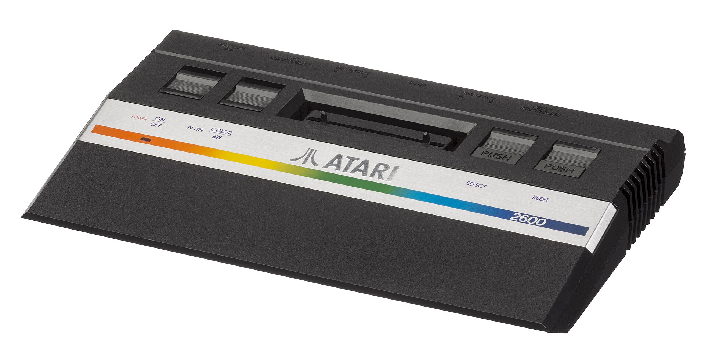
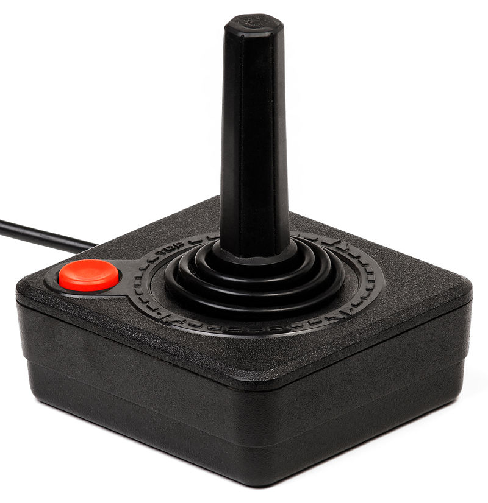
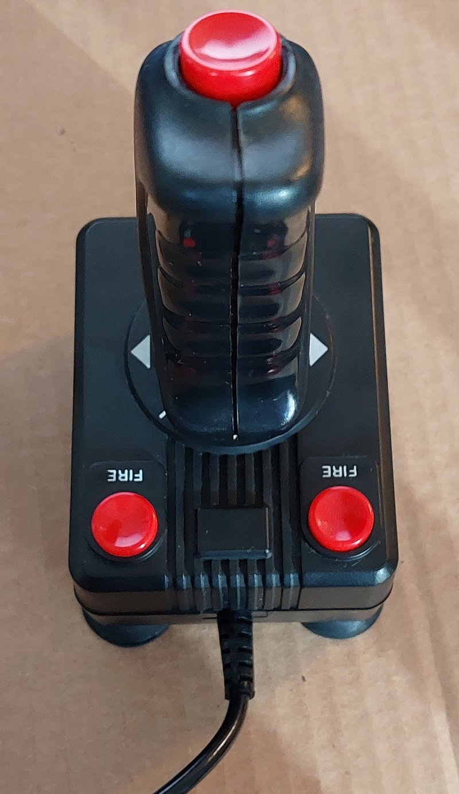

Primeiro modelo do Atari 2600, o Heavy Sixer.

Segundo modelo do Atari 2600, o Light Sixer.

Terceiro modelo do Atari 2600, o Woody.

Quarto modelo do Atari 2600, o Vader.

O Atari 2600 em sua versão mais barata e reduzida conhecida como "2600 Jr." (lançado apenas nos EUA em 1986).

Controle padrão do console, o CX40.

controle diferente do Atari 2600 com dois botões e um na parte de cima